Managing committee
The people behind Kalavaibhav
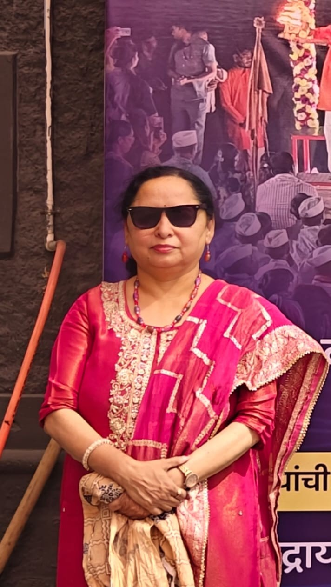
MJMrs. Meghana Joshi
President
+91 98500 65522She holds a B.Sc. in Home Science (specializing in Child Development) and a DTMR certification, with 31 years of experience in the field of disability services. She is a government-certified music therapist. Currently, she serves as the Manager at the 'Sevasadan Dilasa' workshop (catering to adults with intellectual disabilities) and is the President of the 'Kalavaibhav' voluntary organization, where special-needs students undergo physical and mental development through hobby and art activities. Her work involves the rehabilitation of students with disabilities and addressing physical and mental ailments through music therapy. Conducted online music therapy sessions for special needs students; prepared these students for various music therapy competitions; delivered lectures for RCI-accredited CRE courses; and anchored events.
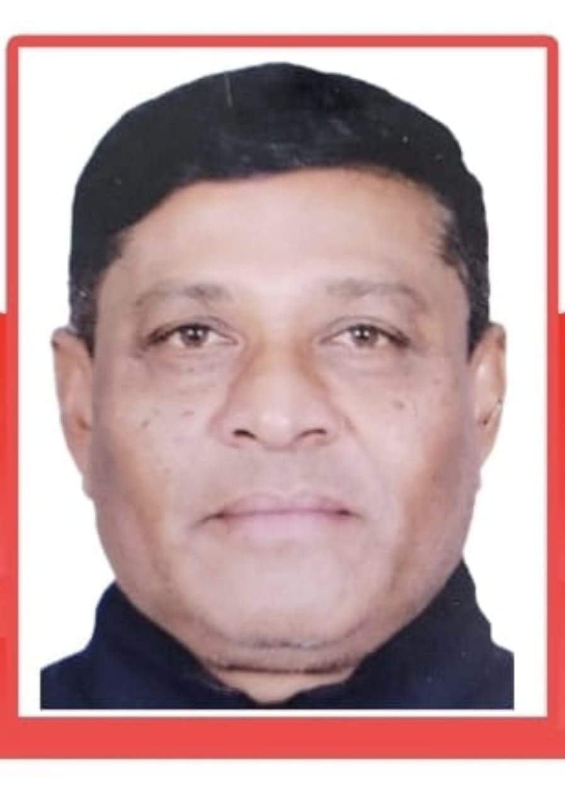
ANMr. Ashok Nangre
Vice President
Served as a sports teacher at a child welfare institution for thirty years! Provided guidance on physical education and sports competitions to athletes with various disabilities, helping special athletes achieve excellence at numerous national and international levels.
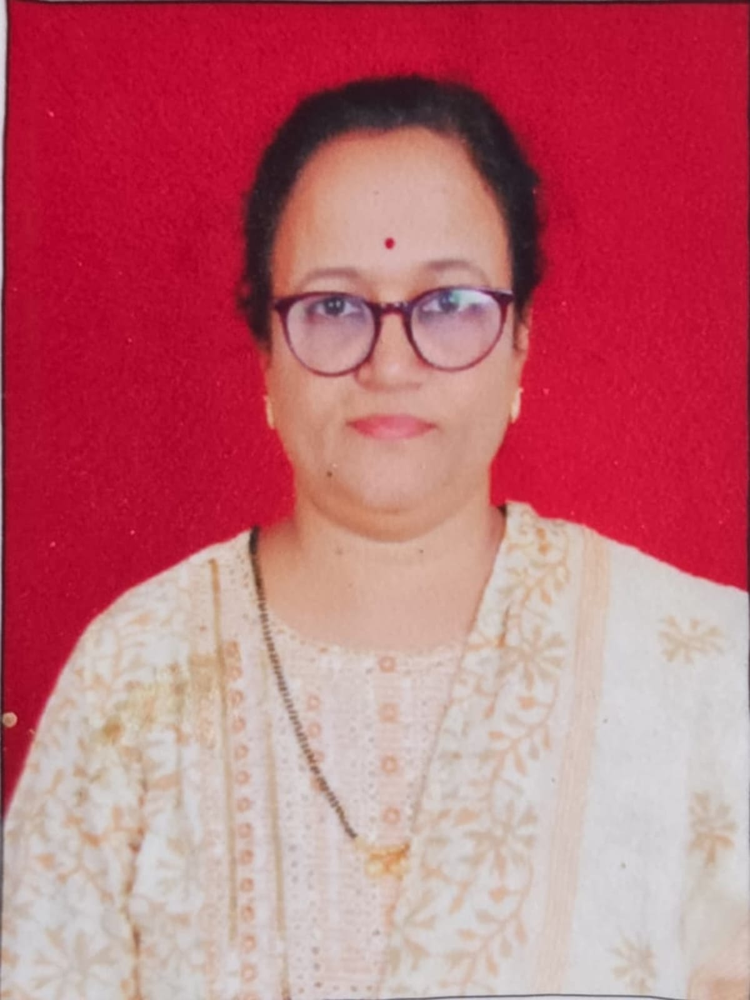
CDMrs. Chanchala Davande
Executive President
She holds an M.Phil. and B.Ed. degree and has completed the DTMR course; she has been working in the field of disability for 36 years and serves as a Founder Trustee of the organization 'Snehkshitij'.
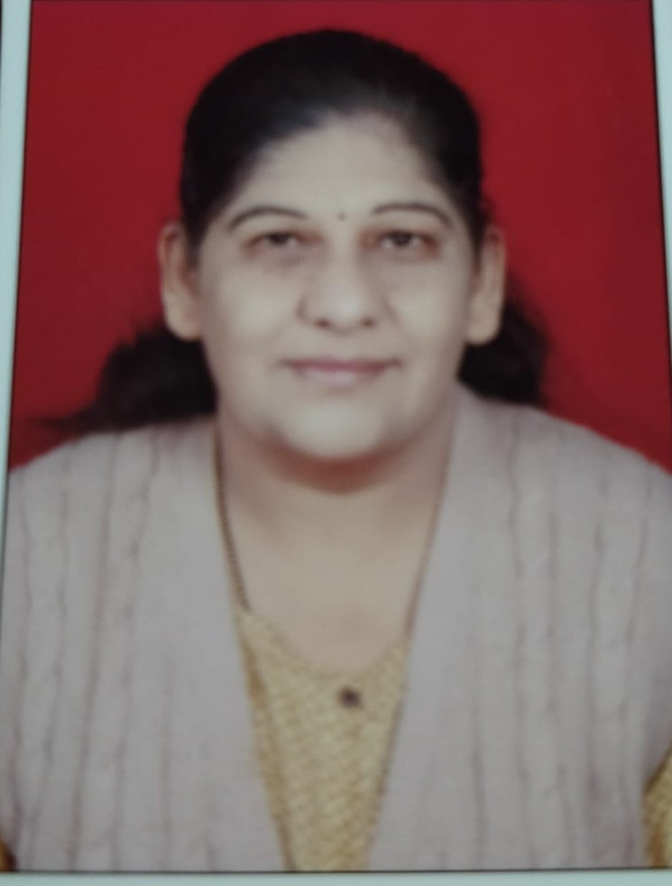
GSMrs. Gayatri Sahasrabuddhe
Secretary
+91 99606 87460DTMR course, PG in school psychology from pune university, 22 yrs experience in a related field, counselling, workshops and carrier guidence.
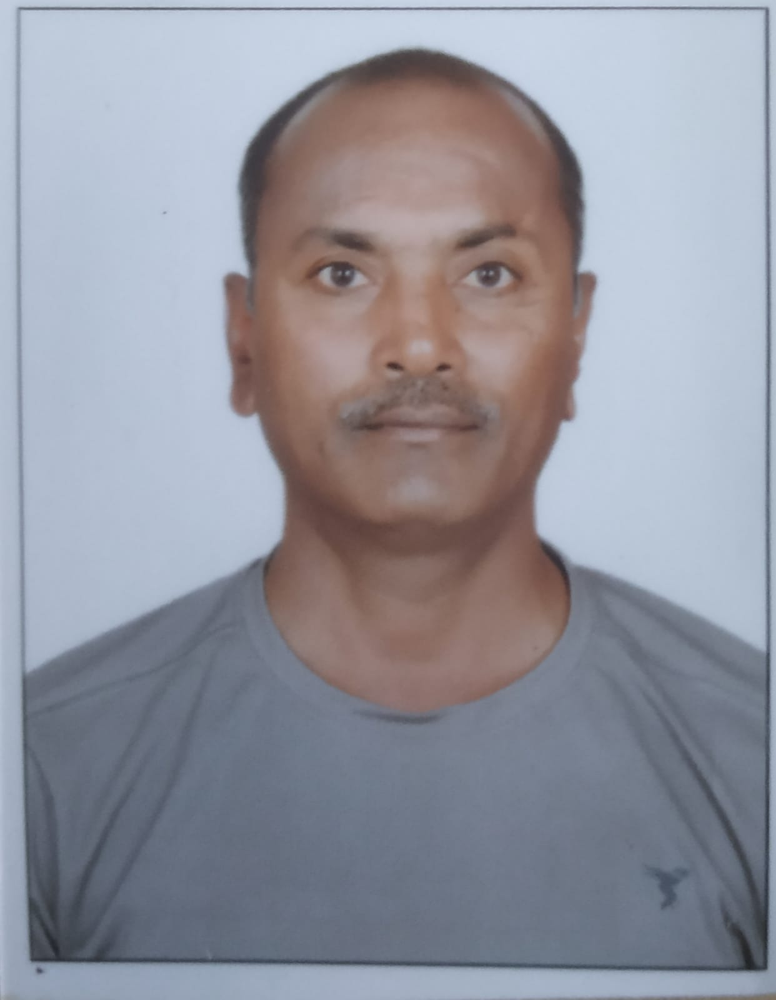
PGMr. Prashant Gadade
Joint Secretary
I have been working as a sports teacher at the Indian Red Cross Society's School for the Deaf for 30 years. In addition to physical training, I choreograph and present demonstrations featuring rhythmic yoga, human pyramids, drill displays, and Lezim performances with students with special needs. I also teach Geography and Mathematics and handle music coordination and lighting design for drama competitions. I have guided students to win awards at the district, state, and national levels. Furthermore, I conduct first-aid training camps. Education: M.A., B.P.Ed.
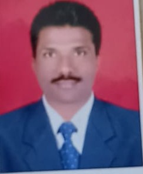
RJMr. Ravindra Joshi
Treasurer
Facilitating the mainstreaming of students with intellectual disabilities by mobilizing support from various segments of society; providing these students with training in arts, sports, music, dance, and drama alongside special education; serving as a lecturer for RCI-mandated CRE training programs for teachers; and working as a National Trainer and Master Trainer for Special Olympics Bharat (Maharashtra) for the past 20 years. serving as a referee at the district, state, and national levels for sports competitions involving students with all types of disabilities.
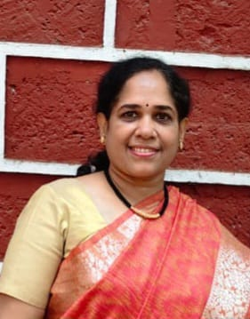
AKMrs. Arati Kulkarni
Member
Holds a Master’s degree in Fine Arts from SNDT College. have launched a handmade products business under the name 'Kalarti Creations' and have a special passion for fabric painting. I work as an authorized professional teacher for Fevicryl and create decorative items on a made-to-order basis. Additionally, I provide training in various art forms to students with special needs and their parents (with a focus on income generation).
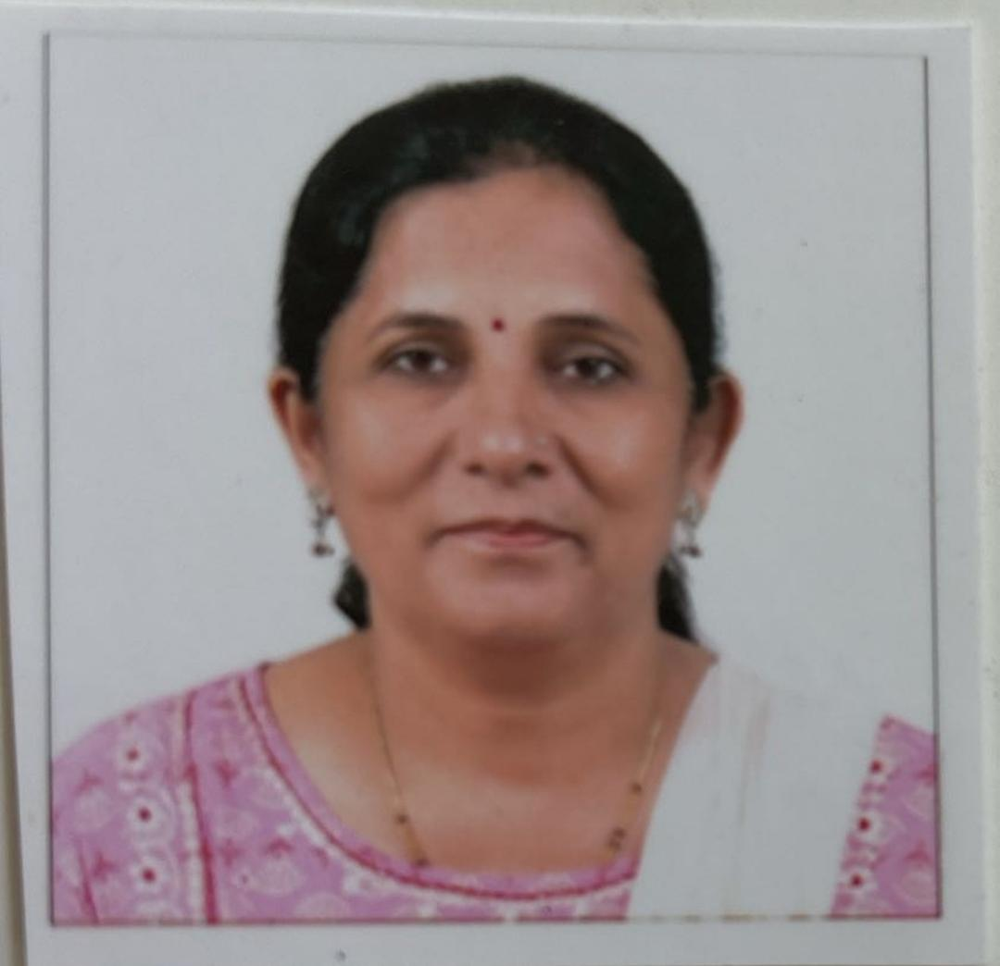
SBMrs. Sulbha Baravkar
Member
She has been working as a craftwork teacher at the child welfare institution for the past 33 years. She provides training in craftwork and rehabilitation guidance to children with disabilities, and prepares them for national and international competitions.
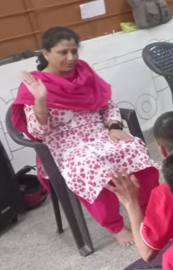
RTMrs. Reva Thakur
Member
She is a government-certified music therapist and holds the title of 'Sangeet Visharad'. She has also completed a diploma in Sugam Sangeet (light music) from SNDT. Working with school students and students with special needs in the capacity of a music therapist, She has received the 'Best Music Award' for 2024 from Anahat Music Therapy.
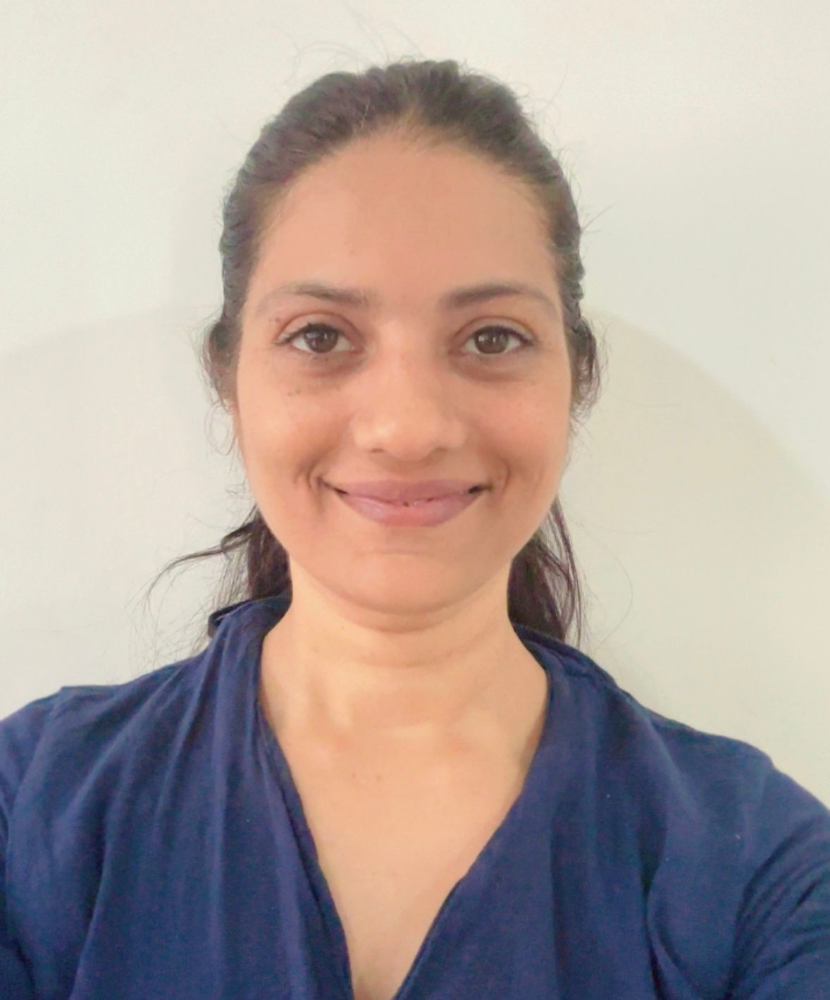
PDPriyasha Sunil Deochake
Member
M.Sc. in Biotechnology. I have been working as a dance instructor for 13 years. Through the 'Anubhuti Art Foundation,' I provide training in classical dance forms as well as various regional and Western dance styles. I also teach dance to students with special needs.
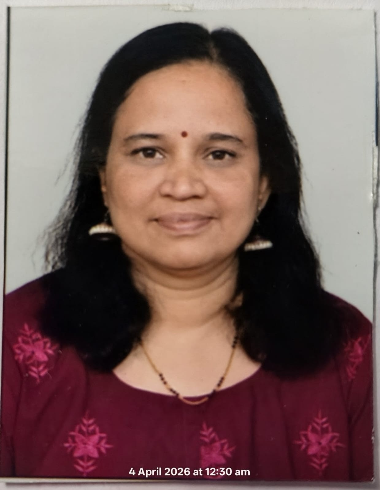
KAMrs. Kshitija Agashe
Member
Has been working as a drama instructor for over 25 years and holds an M.A. in Marathi. Serves as a Marathi teacher at Balshikshan Mandir English Medium School. A Natyachhata (dramatic monologue) authored by her has been published in the new Balbharati textbook for Class 4. Drama technique training activities are also conducted for special-needs students.
Our volunteers
Led by experts who give their time
Beyond the committee, our activities are run by experienced teachers and counsellors — many with years of work in the field of disability — who volunteer their time selflessly so that every student can learn, create and grow.